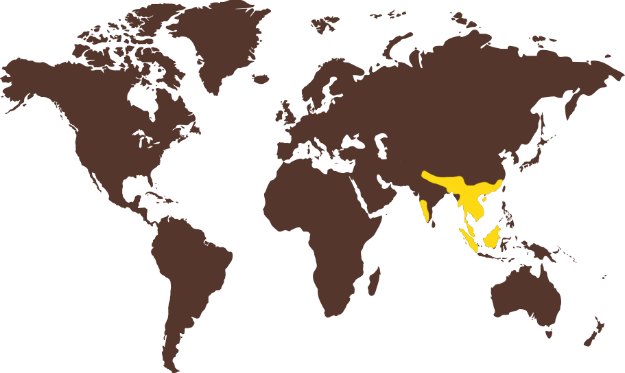

Az ázsiai kiskarmú vidra (latinul Aonyx cinereus) egy kis testű, vízi emlős, amely az ázsiai kontinens trópusi és szubtrópusi területein él. Főként Délkelet-Ázsiában, például Thaiföldön, Malajziában, Indonéziában, és India egyes részein található meg. Ez a vidrafaj különösen a vizes élőhelyeket, mint a mocsarak, folyókat és tavakat kedveli.
Az ázsiai kiskarmú vidra az IUCN Vörös Listáján "sebezhető" (vulnerable) státusszal szerepel, főként a vizek szennyezése, a túlzott vadászat és az élőhelyek elvesztése miatt. Az élőhelyeik elvesztése és a vizek romlása, különösen a vadászat miatt, komoly fenyegetést jelentenek számukra.
Számos országban jogi védelmet élvez, és az állatok megóvása érdekében különböző természetvédelmi intézkedéseket hoztak, hogy megakadályozzák a populációk csökkenését. Az ázsiai kiskarmú vidra egyedülálló és lenyűgöző vízi emlős, amely az ázsiai vizes élőhelyek egészséges ökoszisztémáját jelzi, és fontos szerepet játszik a vízi élővilág fenntartásában.